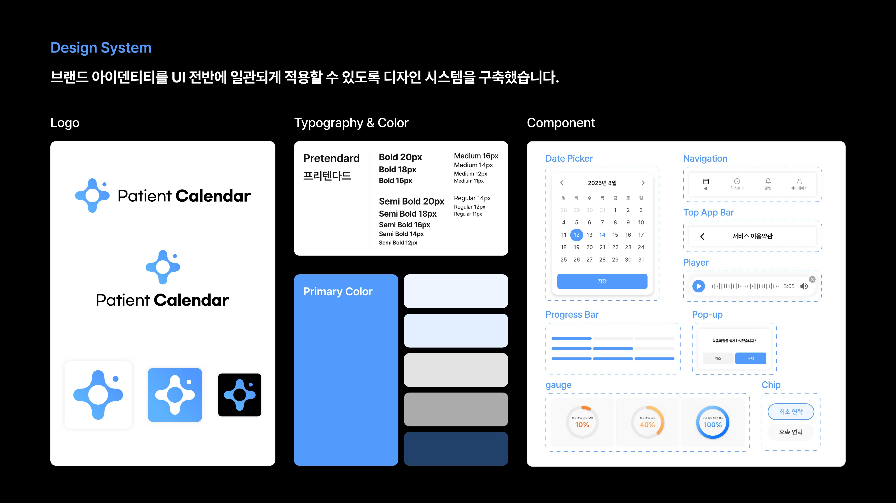
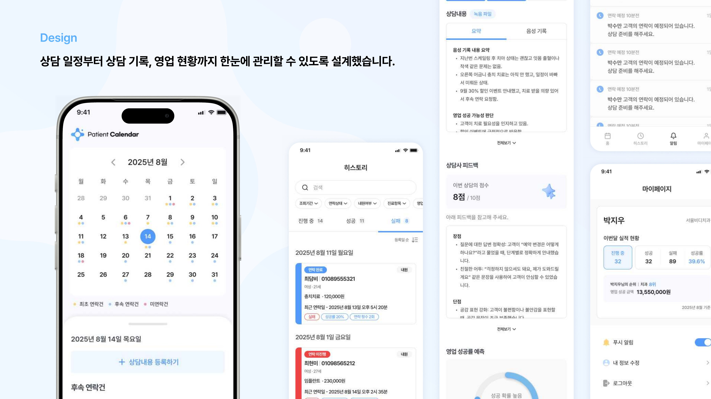

Dental CRM · Sales Follow-up Solution
Patient Calendar
치과 상담부터 후속 영업까지 흩어져 있던 기록을, 캘린더 하나에서 상담 내용 · 성공률 · 실적으로 이어지게 만든 통합 관리 솔루션입니다.
01
Overview
서울비디치과의 상담 실장이 상담 일정, 상담 녹음 기록, 후속 연락, 영업 실적을 각각 따로 관리하던 방식을 하나의 캘린더 기반 흐름으로 통합한 솔루션입니다. 로고 디자인부터 전체 UI/UX를 담당했습니다.
02
Design System
상담 상태(최초 연락 · 후속 연락 · 미연락)를 캘린더 위 색상 점으로 구분하고, 성공률처럼 정도를 나타내는 값은 게이지 컴포넌트로 시각화했습니다.

03
Design
날짜를 선택하면 해당일의 후속 연락건과 상담 내용 등록 화면으로 이어지도록 구성했습니다. 상담 녹음 파일을 업로드하면 내용을 요약해 보여주고, 상담사 피드백에서는 잘한 점 · 아쉬운 점과 함께 점수를 제시해 상담 품질을 스스로 점검할 수 있도록 했습니다. 히스토리 화면에서는 진행 중 · 성공 · 실패 상태로 상담을 필터링하고, 마이페이지에서는 이번 달 실적과 치과 내 순위 · 영업 성공 금액을 확인할 수 있습니다.

04
Result
영업 실적 가시화
상담 성공률과 실적을 상담 실장이 스스로 확인하고 관리할 수 있는 구조를 만들었습니다.